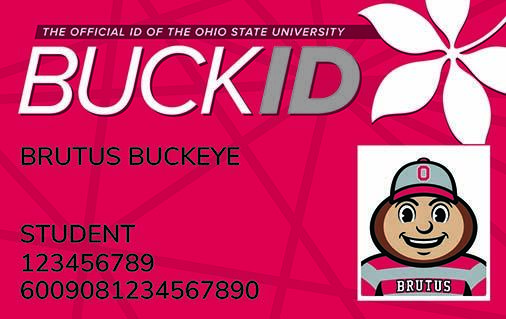

The digital BuckID system is used by students to manage campus accounts like meal balances, printing money, deposits, and building access through a QR code. It is mainly used through a mobile app or web browser and plays a big role in everyday campus life.
Affordances are features that show users how something can be used. Buttons like “Make a Deposit” or “Report Card Lost or Stolen” clearly show what action they perform. The “Digital BuckID” button is also large and placed in a central spot, which makes it clear that it is one of the main features of the app.
Feedback is how the system responds after a user takes an action. When students scan into buildings, they get immediate feedback through sounds, lights, or access being granted. However, when users have to log in again through other apps, the experience feels less smooth and can interrupt the flow of using the system.
Discoverability is how easy it is for users to find features in a system. Important features like reporting a lost card appear in multiple places, which makes them easy to find. At the same time, some information like detailed transaction history is harder to locate, which can make certain tasks more confusing.
Consistency means that similar features behave in similar ways across the system. The app is mostly consistent with its navigation, especially with the bottom menu for balances, transactions, and the QR code. However, it becomes inconsistent when users have to log in separately across different campus systems, which breaks the overall experience.
Constraints are limits on what users can do within a system. The app restricts certain actions, like requiring a web login to complete deposits or preventing access without proper authentication. While these limits help with security, they can also slow users down and interrupt their tasks.
Cognitive load is the amount of mental effort needed to use a system. The app does a good job organizing information like balances and transactions so it is not overwhelming. However, unclear differences between account types like dining dollars and BuckID cash can make users think more than necessary.
Mental models are the expectations users have about how a system should work. Students often expect the app to work like a banking app, where transactions are clearly shown and easy to understand. When the app does not match those expectations, it can lead to confusion, especially when information feels limited or unclear.
The BuckID system works well for basic tasks and is easy for students to learn. It has strong affordances and feedback, but some issues with consistency, limited information, and unclear account details make it less efficient than it could be. Improving these areas would make the overall experience smoother and easier to use.